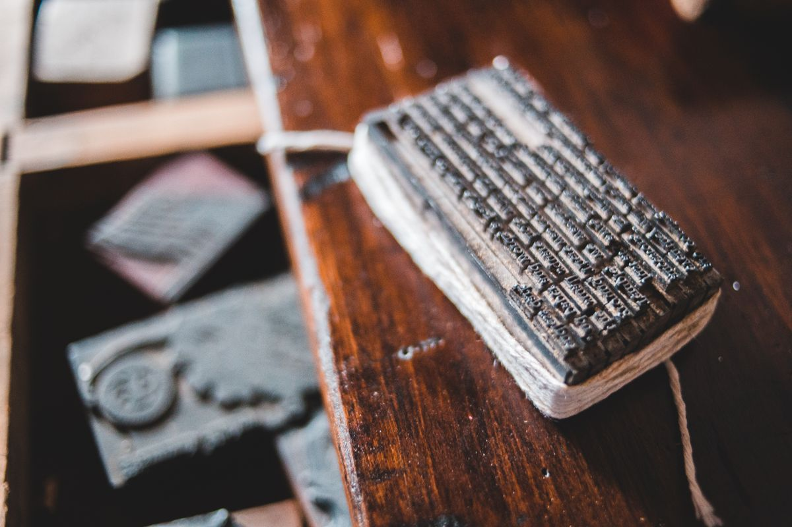

Valk Text — first punch to first casting
The brief
Dutch letterpress book printers were setting new books in old type: worn founts, missing sorts, faces designed for machine composition. The bench set out to cut one original text face properly — 94 characters, every punch by hand, cast in the sizes book work actually uses.
The decisions
The a was cut first, on 14 January 2023, and proved at 12 pt; every later character was judged against it. The order of cutting followed the order of use — lowercase first, then capitals, punctuation and ligatures, and the figures last, because figures must agree in width to the fraction and took four months on their own. Nothing was drawn on a screen at any point: the design lives in the punches, and the proofs are the drawings.
The outcome
Ninety-four characters in twenty-six months. The first casting, February 2025, was a ten-page fount of the 12 pt — 25,000 sorts, 60 kg of metal — for a letterpress printer in Utrecht, whose verdict is printed on the specimen page. A second fount went to a book artist in Ghent. The face is in the catalogue at 10–36 pt, and its state is printed as what it is: complete.
Plate I — Valk Text at sizes (screen proof)
Tombstone
Valk Text
- Kind
- Original face
- Characters
- 94 of 94
- Ran
- January 2023 – February 2025
- Making
- Punches hand-cut; cast on the hand-fed caster, display sizes in the hand mould
- First casting
- 12 pt, ten pages — 25,000 sorts, 60 kg
